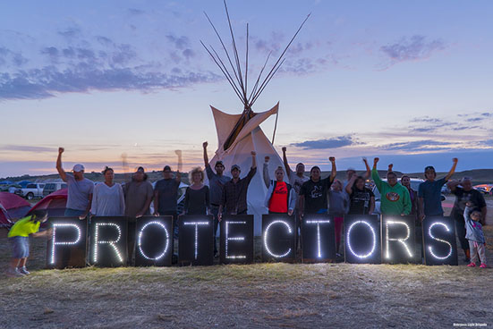
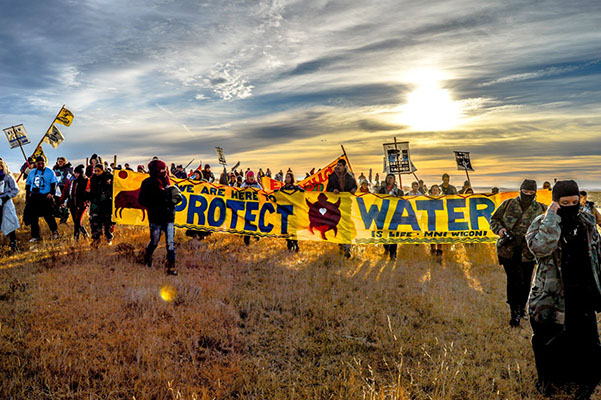

The Dakota Access Pipeline protests, also known by the hashtag #NODAPL, are grassroots movements that began in early 2016 in reaction to the approved construction of Energy Transfer Partners' Dakota Access Pipeline in the northern United States. The pipeline was projected to run from the Bakken oil fields in western North Dakota to southern Illinois, crossing beneath the Missouri and Mississippi Rivers, as well as under part of Lake Oahe near the Standing Rock Indian Reservation. Many in the Standing Rock tribe considered the pipeline and its intended crossing of the Missouri River to constitute a threat to the region's clean water and to ancient burial grounds. In April 2016, Standing Rock Sioux elder LaDonna Brave Bull Allard established a camp as a center for cultural preservation and spiritual resistance to the pipeline; over the summer the camp grew to thousands of people.
The U.S. Army Corps of Engineers had conducted a limited review of the route and found no significant impact, but in March and April 2016 the Environmental Protection Agency, the Department of Interior, and the Advisory Council on Historic Preservation asked the Army Corps of Engineers to conduct a formal Environmental Impact Assessment and issue an Environmental Impact Statement. The Standing Rock Sioux Tribe filed suit against the Corps of Engineers in July, but the motion was denied. In December, under President Barack Obama's administration the Corps of Engineers denied an easement for construction of the pipeline under the Missouri River. An environmental impact assessment was to be conducted by the Army Corps, but many protesters continued camping on the site, not considering the matter closed.[5][6][7] On January 24, 2017, newly elected President Donald Trump signed an executive order that reversed the Obama legislation and advanced the construction of the pipeline under "terms and conditions to be negotiated, " expediting the environmental review that Trump described as an "incredibly cumbersome, long, horrible permitting process."[8][9] On February 7, 2017, Trump authorized the Army Corps of Engineers to proceed, ending the environmental impact assessment and the associated public comment period.[10] The pipeline was completed by April and its first oil was delivered on May 14, 2017.
The protests have drawn international attention and have been said to be "reshaping the national conversation for any environmental project that would cross the Native American land."[12] In September 2016 construction workers bulldozed a section of land the tribe had identified as sacred ground and when protesters entered the area security workers used attack dogs which bit at least six of the protesters and one horse. The incident was filmed and viewed by several million people on YouTube and other social media. In October, armed soldiers and police with riot gear and military equipment cleared an encampment that was directly in the proposed pipeline's path. In November many new participants joined the protest; fluctuating numbers of protesters remained in the thousands. Police use of water cannons on protesters in freezing weather drew significant media attention. Following Donald Trump's approval for the completion of the pipeline the number of protesters gradually decreased and on February 23, 2017 the National Guard and law enforcement officers evicted those that remained.
The Dakota Access Pipeline, a part of the Bakken pipeline project, is a 1,172-mile-long (1,886 km) underground oil pipeline project in the United States. The pipeline was planned by Dakota Access, LLC, a subsidiary of the Dallas, Texas corporation Energy Transfer Partners, L.P. It begins in the Bakken oil fields in Northwest North Dakota and travels in a more or less straight line southeast, through South Dakota and Iowa, ending at the oil terminal near Patoka, Illinois.[14][15] According to court records, the pipeline was due for delivery on January 1, 2017.
Routing the pipeline across the Missouri River near Bismarck was rejected because of the route's proximity to municipal water sources; residential areas; and road, wetland, and waterway crossings. The Bismarck route would also have been 11 miles (18 km) longer.[17] The alternative selected by the Corps of Engineers crossed underneath the Missouri River half a mile (800 m) from the Standing Rock Indian Reservation. A spill could have major adverse effects on the waters that the Tribe and individuals in the area rely upon.[18] Using a permit process that treated the pipeline as a series of small construction sites, the pipeline was granted an exemption from the environmental review required by the Clean Water Act and the National Environmental Policy Act.
However, citing potential effects on the Native tribes, most notably the Standing Rock Sioux, in March and April 2016 the Environmental Protection Agency (EPA), the Department of Interior (DOI), and the Advisory Council on Historic Preservation asked the U.S. Army Corps of Engineers to conduct a formal Environmental Impact Assessment and issue an Environmental Impact Statement (EIS).
Noting that the water system serving Fort Yates on the Standing Rock Reservation was only 10 miles (16 km) downstream of where the pipeline would cross Lake Oahe and the Missouri River, the EPA recommended that the Army Corps revise its Environmental Assessment and open up a second public comment period. "Based on our improved understanding of the project setting, we also recommend addressing additional concerns regarding environmental justice and emergency response actions to spills/leaks."
The DOI also expressed concerns about the pipeline's proximity to the tribe's water source: The routing of a 12- to 30-inch crude oil pipeline in close proximity to and upstream of the Reservation is of serious concern to the Department. When establishing the Standing Rock Sioux Tribe's permanent homeland, the U.S. reserved waters of sufficient quantity and quality to serve the purposes of the Reservation. The Department holds more than 800,000 acres of land in trust for the Tribe that could be impacted by a leak or spill. Further, a spill could impact the waters that the Tribe and individual tribal members residing in that area rely upon for drinking and other purposes. We believe that, if the pipeline's current route along the edge of the Reservation remains an option, the potential impact on trust resources in this particular situation necessitates full analysis and disclosure of potential impacts through the preparation of an [Environmental Impact Statement].
As of September 2016, the United States Department of Justice had received more than 33,000 petitions to review all permits and order a full review of the project's environmental effects.
Sacred Stone Camp was founded by Standing Rock's Historic Preservation Officer, LaDonna Brave Bull Allard, on April 1, 2016, as a center for cultural preservation and spiritual resistance to the Dakota Access pipeline.In the spring and early summer of 2016, Allard and other Indigenous leaders focused on media outreach, resulting in tribal delegations and individuals coming to stand with them from all over the country and, eventually, the world.As the numbers grew beyond what Allard's land could support, an overflow camp was also established nearby, which came to be known as the Očhéthi Šakówiŋ camp (the Lakȟótiyapi name for the Great Sioux Nation or Seven Fires Council).
In the spring and early summer of 2016, Allard and other Indigenous leaders focused on media outreach, resulting in tribal delegations and individuals coming to stand with them from all over the country and, eventually, the world.[24] As the numbers grew beyond what Allard's land could support, an overflow camp was also established nearby, which came to be known as the Očhéthi Šakówiŋ camp (the Lakȟótiyapi name for the Great Sioux Nation or Seven Fires Council).
The U.S. government is wiping out our most important cultural and spiritual areas. And as it erases our footprint from the world, it erases us as a people. These sites must be protected, or our world will end, it is that simple. Our young people have a right to know who they are. They have a right to language, to culture, to tradition. The way they learn these things is through connection to our lands and our history.
If we allow an oil company to dig through and destroy our histories, our ancestors, our hearts and souls as a people, is that not genocide?
By late September NBC News reported that members of more than 300 federally recognized Native American tribes were residing in the three main camps, alongside an estimated 3,000 to 4,000 pipeline resistance supporters. Several thousand more gathered at the camps on weekends.[12][26][27] As winter approached numbers grew lower, but the protesters winterized and prepared for an indefinite stay. In October another camp, called "Winter Camp", was established[28] directly in the proposed pipeline's path on the property recently purchased by Energy Transfer Partners. Citing eminent domain,[29] the Native American protesters declared that the land rightly belongs to them under the Treaty of Fort Laramie (1851). Though the initial territory agreed to in the treaty was later broken up into smaller reservations, the treaty was never nullified and was being invoked as law.[30] On October 27, armed soldiers and police in riot gear removed the protesters from the new encampment
In September 2014, Standing Rock Sioux Tribal (SRST) Councilman David Archambault II conducted an initial informational meeting between the SRST and Dakota Access Pipeline representatives. At the beginning of the meeting, Archambault indicated the tribe's opposition to the project within treaty boundaries, stating, "So just that you know: this is something that the tribe is not supporting." Additional SRST representatives voiced opposition and concerns about the pipeline.
Pipeline protests were reported as early as October 2014, when Iowa community and environmental activists presented 2,300 petitions to Iowa Governor Terry Branstad asking him to sign a state executive order to stop it.[43] Voicing concerns for damage to wildlife habitat and sacred sites, the Sac and Fox Tribe of the Mississippi in Iowa (Meskwaki Nation) also objected to the route and formally lodged their opposition in early 2015.[44] Tribal members were also among those who opposed the Keystone XL pipeline.[45] In a letter to the Iowa Utilities Board, Tribal chairwoman Judith Bender wrote:
As a people that have lived in North America for thousands of years, we have environmental concerns about the land and drinking water...Our main concern is Iowa's aquifers might be significantly damaged. And it will only take one mistake and life in Iowa will change for the next thousands of years. We think that should be protected, because it is the water that gives Iowa the best way of life.
The tribe sued for an injunction on the grounds that the U.S. Army Corps of Engineers had failed to conduct a proper environmental and cultural impact study. Protests had escalated at the pipeline site in North Dakota, with numbers swelling from just a bare handful of people to hundreds and then thousands over the summer.
The Standing Rock Sioux tribe believes that the pipeline would put the Missouri River, the water source for the reservation, at risk. They pointed out two recent spills, a 2010 pipeline spill into the Kalamazoo River in Michigan, which cost over billion to clean up with significant contamination remaining, and a 2015 Bakken crude oil spill into the Yellowstone River in Montana.[36][47][48] The Tribe was also concerned that the pipeline route may run through sacred Sioux sites. In August 2016 protests were held, halting a portion of the pipeline near Cannon Ball, North Dakota.[49][50] Peaceful protests continued and drew indigenous people from throughout North America, as well as other supporters. A number of planned arrests occurred when people locked themselves to heavy machinery.
On August 23, Standing Rock Sioux Tribe released a list of 87 tribal governments who wrote resolutions, proclamations and letters of support stating their solidarity with Standing Rock and the Sioux people.[52] Since then, many more Native American organizations, politicians, environmental groups and civil rights groups joined the effort in North Dakota, including the Black Lives Matter movement, indigenous leaders from the Amazon Basin of South America, Vermont Senator Bernie Sanders, the 2016 Green Party presidential candidate Jill Stein and her running mate Ajamu Baraka, and many more.[53] The Washington Post called it a "National movement for Native Americans."[12][54] As of September, the protest constituted the single largest gathering of Native Americans in more than 100 years.